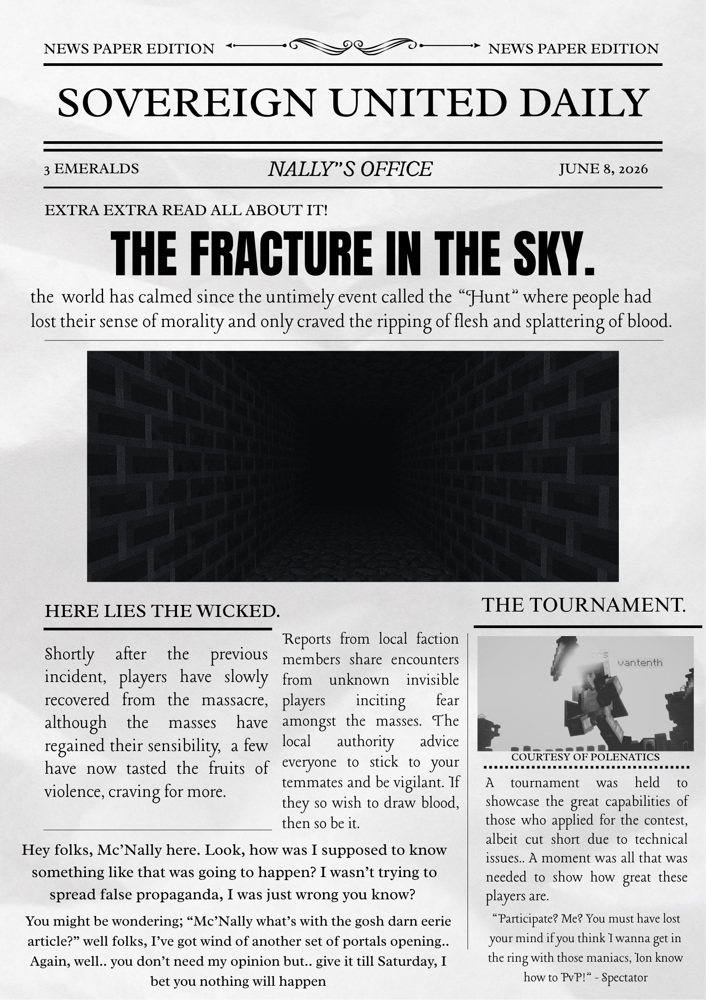

Accessing Historical Records...
"We are united by one value, which is our powerlessness under it."
— Toru__
Historical Record of the Realm
The world was not destroyed. It was cultivated.

Reports indicate reality itself has begun to fracture. Entity activity continues to rise across all recorded sectors. Correspondents have gone silent at the outer reaches.
Read Record →"The world we know now is far different from what it once used to be."
Players disappeared from their original world and awoke in a new realm with no memory of their past. What they found was not salvation — it was the beginning of something far older, and far worse.
Read Chronicle →